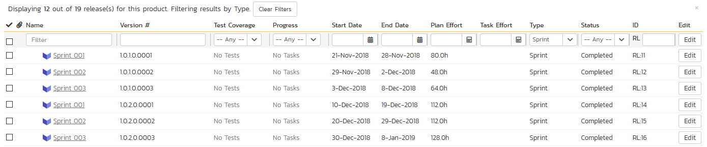
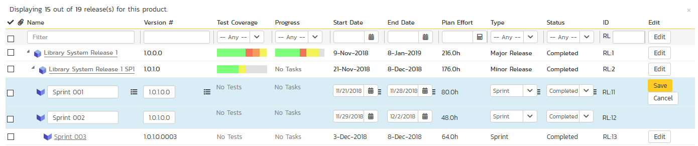
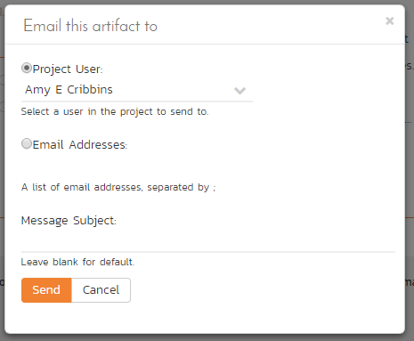
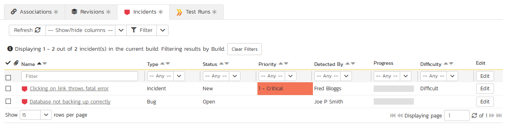

Release Management
This section outlines how to use the Release Management features of SpiraPlan® to manage different versions of the system being tested in a particular product. This is an optional feature of the system, and you can manage the testing for a product successfully without tracking individual releases. Typically, when you develop a system, it is important to ensure that features introduced in successive versions do not impair existing functionality - this is known as regression testing.
In such situations, you will want to be able to execute the same set of test scripts against multiple versions of the system and be able to track failures by version. A feature that works correctly in version 1.0 may fail in version 1.1, and the maintenance team may be testing the existing lifecycle of v1.0 in parallel with the development team testing v1.1. Therefore, by developing a master set of releases/versions in the Release Management module, you can have the different testing teams correctly assign their testing actions to the appropriate version.
There are two types of release artifact in SpiraPlan® - major product releases that are displayed with the blue release icon and represent major versions of the system, and release Sprints (aka builds) that are displayed with a yellow icon and represent intermediate builds/sprints of the system. Note: Sprints can be contained within a Release, but not the other way round.
The main differences between releases and sprints are as follows:
Releases are independent versions of the system being tested and as such, you can map a requirement directly to a release, indicating the release of the system that the requirement will be fulfilled in.
When you report on a release (e.g. on the product home or in one of the reports) any child sprints are automatically taken into account, and test runs and incidents that are related to the child builds/sprints will get included in the release reports. Child releases on the other hand are not aggregated up into the parent release.
Release List
When you click on the Planning > Releases global navigation link, you will initially be taken to the release list screen illustrated below:
The release list will contain all the releases and sprints associated with current product. When you create a new product, this list will initially be empty, and you will have to use the "Insert" button to start adding releases and sprints to the product. The hierarchical organization of releases in the list is configurable, so you can organize the various releases in the way that makes most sense for a particular product. Typically you have the major releases as the top-level items, with sub-releases, builds and sprints as the lower-level items.
All of the releases in the list have a release-name, together with the assigned version number for that release, the start-date and end-date for the release, the number of estimated product personnel working on that release, the planned effort for the release, the total effort currently scheduled (as tasks), the available effort for new tasking, the release id, the type of each release, its status, and a set of custom properties defined by the product owner.
For those releases that have test cases mapped against them, the execution status of the various test cases associated with the release is displayed in aggregate for each item as a graphical bar diagram. If you position the mouse over the execution status indicator you will see the detailed execution information displayed as a tooltip.
For those releases that have at least one requirement task associated with them, they will display a block graph that illustrates the relative numbers of task that are on-schedule (green), late-starting (yellow), late-finishing (red) or just not-started (grey). These values are weighted by the effort of the task, so that larger, more complex tasks will be change the graph more than the smaller tasks. To determine the exact task progress information, position the mouse pointer over the bar-chart and the number of associated tasks, along with the details of how many are in each status will be displayed as a "tooltip".
Clicking on a release's hyperlink will take you to the release details page for the item in question.
Filtering
You can easily filter the list of releases as illustrated in the screen-shot below:

To filter the list by any of the displayed columns, you either choose an item from the appropriate drop-down list or enter a free-text phrase (depending on the type of field) and click "Filter" or press the <ENTER> key. Note that the name field is searched using a "LIKE" comparison, so that searching for "database" would include any item with the word database in the name. The other freetext fields need to be exact matches (e.g. dates, release numbers). Clicking on Filter > Clear Filters clears all the set filters and displays all the releases for the product.
In addition, if you have a set of filters that you plan on using on a regular basis, you can choose the option Filter > Save Filter to add the current filter to the list of saved filters that appear on your 'My Page'. The list of saved filters can also be retrieved by clicking Filter > Retrieve Filter.
Insert
The "Insert" button has an attached dropdown menu that allows you to choose whether to insert a release or sprint (if you just click "Insert" it defaults to inserting a release). In either case, it will insert the new release / sprint above the currently selected item -- i.e. the one whose check-box has been selected, at the same level in the hierarchy. If you want to insert a release/sprint below a summary item, you need to insert it first, then indent it with the "Indent" button. If you insert a release without first selecting an existing release from the list, the new release will simply be inserted at the end of the list.
Once the new release has been inserted, the item is switched to "Edit" mode so that you can change the default name, active flag, version number and creator.
Delete
Clicking on the "Delete" button deletes all the releases whose check-boxes have been selected. If any of the releases have child releases/sprint, then the child releases and sprints are also deleted.
Indent
Clicking on the "Indent" button indents all the releases whose check-boxes have been selected. Note: you cannot indent a release or sprint if it is below a sprint, as sprints are not allowed to have child items.
Outdent
Clicking on the "Outdent" button de-indents all the releases whose check-boxes have been selected.
Refresh
Clicking on the "Refresh" button simply reloads the release list. This is useful as other people may be modifying the list of releases at the same time as you, and after stepping away from the computer for a short-time, you should click this button to make sure you are viewing the most current release list for the product.
Edit
Each release/sprint in the list has an "Edit" button display in its right-most column. When you click this button or click on any of the cells in the row, you change the item from "View" mode to "Edit" mode. The various columns are made editable, and "Save" buttons are displayed in the last column:

If you click "Edit" on more than one row, the "Save" buttons are only displayed on the first row, and you can make changes to all the editable rows and then update the changes by clicking the one "Save" button. Also, if you want to make the same change to multiple rows (e.g. to change five releases from "active" to "inactive"), you can click on the "fill" icon to the right of the editable item, which will propagate the new value to all editable items in the same column.
If you want to edit lots of items, first select their checkboxes and then click the "Edit" button on the same row as the Filters and it will switch all the selected items into edit mode.
When you have made your updates, you can either click "Save" to commit the changes, or "Cancel" to revert back to the original information. Alternatively, pressing the <ENTER> key will commit the changes and pressing the <ESCAPE> key will cancel the changes.
Show Level
Choosing an indent level from the 'Show Level' drop down box allows you to quickly and easily view the entire release list at a specific indent level. For example you may want to see all releases drilled-down to the third level of detail. To do this you would simply choose 'Level 3' from the list, and the releases will be expanded / collapsed accordingly.
Show / Hide Columns
This drop-down list allows you to change the fields that are displayed in the release list as columns for the current product. To show a column that is not already displayed, simply select that column from the list of "Show..." column names and to hide an existing column, simply select that column from the list of "Hide..." column names. This is stored on a per-product basis, so you can have different display settings for each product that you are a member of. The fields can be any of the built-in fields or any of the custom properties set up by the product owner.
Copying Releases/Sprints
To copy a release/sprint or set of releases/sprints, simply select the check-boxes of the release/sprint you want to copy and then select the Edit > Copy Items menu option. This will copy the current release/sprint selection to the clipboard. Then you should select the place where you want the releases/sprints to be inserted and choose the Edit > Paste Items option.
The releases/sprints will now be copied into the destination location you specified. The name of the copied releases/sprints will be prefixed with "Copy of..." to distinguish them from the originals. Note that copied releases/sprints will also include the test mapping information from the originals.
Moving Releases/Sprints
To move a release/sprint in the hierarchy, there are two options:
-
Click on the release/sprint you want to move and drag the icon to the location you want it moved. An empty space will appear to show you where it will be inserted. Once you have the requirement positioned at the correct place that you want it inserted, just release the mouse button. To move multiple items simply select their checkboxes and then drag-and-drop one of the selected items
-
Alternatively you can simply select the check-boxes of the release/sprint you want to move and then select the Edit > Cut Items menu option. This will cut the current release/sprint selection to the clipboard. Then you should select the place where you want the release/sprint to be inserted and choose the Edit > Paste Items option. The release/sprint will now be moved into the destination location you specified.
Exporting Releases/Sprints
To export releases/sprints from the current product to another product in the system, select the check-boxes of the releases/sprints you want to export and then click the Tools > Export to Product item. This will then bring up a list of possible destination products:
Once you have chosen the destination product and clicked the "Export" button, the releases/sprints will be exported from the current product to the destination product. Any file attachments will also be copied to the destination product along with the release/sprint.
Creating Test Sets from Releases
As a shortcut you can click the Tools > Create Test Set option to create a new test set for each of selected releases. The created test sets will include all of the test cases associated with a release. This is useful in regression testing when you have created a new release and want to be able to quickly assign a tester to ensure that all the functionality in the release works as expected.
Printing or Saving Items
To quickly print a single release/sprint or list of releases/sprints you can select the items' checkboxes and then click Tools > Print Items. This will display a popup window containing a printable version of the selected items. You can also save the report in a variety of common formats from the same Tools menu.
Right-Click Context Menu
SpiraPlan® provides a shortcut -- called the context menu - for accessing some of the most commonly used functions, so that you don't need to move your mouse up to the toolbar each time. To access the context menu, right-click on any of the rows in the release list and the following menu will be displayed:

You can now choose any of these options as an alternative to using the icons in the toolbar
Release Details
When you click on release item in the release list, you are taken to the release details page illustrated below:
This page is made up of three areas;
-
the left pane displays the releases list navigation;
-
the right pane's header, which displays: the operations toolbar; the editable name of the selected release; and the info bar (with a shaded background), which also contains the workflow status transitions (see below); and
-
the right pane's tabbed interface with rich information related to the release.
Please note that on smaller screen sizes the navigation pane is not displayed. While the navigation pane has a link to take you back to the releases list, on mobile devices a 'back' button is shown on the left of the operations toolbar.
The navigation pane can be collapsed by clicking on the "-" button, or expanded by clicking anywhere on the gray title area. On desktops the user can also control the exact width of the navigation pane by dragging and dropping a red handle that appears on hovering at the rightmost edge of the navigation pane.
The navigation pane consists of a link that will take you back to the release list, as well as a list of the other releases in the current product. This latter list is useful as a navigation shortcut; you can quickly view the test run information of all the other releases by clicking on the navigation links without having to first return to the release list page. The navigation list can be switched between two different modes:
-
The list of releases matching the current filter
-
The list of all releases, irrespective of the current filter
If you are editing an existing item, the fields that are available and the fields that are required will depend on your stage in its workflow. The types of change allowed and the email notifications that are sent will depend on how your product administrator has setup the system for you. Administrators should refer to the SpiraPlan Administration Guide for details on configuring workflows to meet their needs.
Depending on the user's role and whether they are listed as the owner or author of the requirement, displayed in the info bar beneath the requirement name is the current workflow status and an "operations" button which, when clicked, will show a set of allowed workflow operations.

Releases can have the following statuses: planned, in progress, completed, closed, deferred, and cancelled. Note that releases marked as closed, deferred, or cancelled cannot be associated with other artifacts -- for example an incident's resolved release cannot by a cancelled release.
Workflow transitions allow the user to move the item from one status to another. For example when the release is in the In Progress status, you will be given the options to:
Cancel Release -- changes status to "Cancelled"
Defer Release -- changes the status to "Deferred"
Finish Release - changes the status to "Completed"
Please note that if digital signatures have been enabled for a particular workflow operation (and therefore a digital signature is required to confirm the status change. Workflow operations requiring a digital signature are marked with a padlock icon as in the example below:

On attempting to save changes made after clicking a workflow operation that requires a digital signature you will be presented with a popup similar to the one below (which is for a requirement):

The top part of the right pane allows you to view and/or edit the details of the particular release. In addition you can delete the current artifact by choosing "Delete", discard any changes made by clicking "Refresh", or print or export it by clicking one of the options from the Tools dropdown menu. The lower part of the right pane can be in one of eight possible modes that can be selected: "Overview", "Incidents", "Reqs & Tasks", "Test Cases", "Test Runs", "Attachments", and "History". Each of the different views is described separately below.
Using the "Email" button on the toolbar, you can send an email containing details of the release to an email address or another user on the system:

You can specify the subject line for the email, and either a list of email addresses, separated by semicolons, or an existing product user .The content of the email is specified in the System Administration -- Notification Templates.
To be notified of any changes made to the current artifact via email, click the "Subscribe" button. If you already subscribed, the button will instead let you "Unsubscribe" to stop receiving emails about that particular artifact. Depending on your role, you may also see a dropdown arrow to the right of this button. This will let you subscribe others in the product to this artifact.
The bottom part of the right pane can be switched between six views: "Overview", "Incidents", "Requirements and Tasks", "Test Cases", "Test Runs", "Attachments", and "History", each of which will be described in more detail below.
Overview -- Details
The Overview tab is divided into a number of different sections. Each of these can be collapsed or expanded by clicking on the title of that section. It displays the description, fields and comments associated with the requirement.
The top part of this tab displays the various standard fields and custom properties associated with the requirement. Fields (both standard and custom) are grouped under the collapsible headings (marked by orange text and underline) in the screenshot below. For instance, all fields regarding dates are grouped together in the "Dates and Times" area.
When you make changes to the release/sprint's start-date, end-date, number of product personnel resources, or number of non-working person days, the system will automatically calculate how many hours of effort (planned effort) are available in the release/sprint for assigning tasks. As you begin assigning tasks -- either through the Tasks tab or the Sprint Planning screen -- the total estimated effort of the tasks is subtracted from this planned effort to give the "available effort".
Followers
Using the "Subscribe" button on the toolbar, you can quickly follow the item, and receive updates on certain changes to it. Depending on your role, you may also see a dropdown to this button, which let's you add another product member as a follower to this item.


You can also quickly see who is following an incident under the "People" section in the Overview tab.

To view information about the follower, or to unfollow them from the item, hover over their avatar to display a user profile card.

Overview -- Detailed Information
The Detailed Information section contains the long, formatted description of the requirement, as well as any rich text custom fields. You can enter rich text or paste in from a word processing program or web page into these fields. Clicking on the shaded areas of one of these detailed fields will display the rich text toolbar.
Overview - Comments
The Comments tab shows the current discussion thread for this release:

All existing comments are listed in order by entered date (either newest-first or oldest-first). To create a new comment, enter the text into the text box, and then click the "Add Comment" button.
Overview - Builds
This section displays the list of builds associated with the current release/sprint. Each build is listed together with its name, creation date, status (whether the build succeeded or failed), and last updated date. Clicking on the hyperlink for the build name will open up the Build Details page.

You can also filter the results by choosing items from the filter options displayed in the sub-header row of each field and clicking the "Apply Filter" button. In addition, you can quickly sort the list by clicking on one of the directional arrow icons displayed in the header row of the appropriate field.
Incidents
This tab displays the incidents associated with the selected release. The incident list can be one of three modes:
Detected in this Release -- this will display a list of all the incidents that were detected during the testing of the selected release. This is useful in determining if there are open incidents associated with a release that need to be dealt with.
Resolved in this Release -- This will display a list of all the incidents that have been reportedly resolved in this release. This is useful for double-checking that all the resolved incidents for a release have indeed been fixed.
Verified in this Release -- This will display a list of the incidents that have been verified as being fixed in this release. This is useful for generating release notes for a specific release indicating what changes and enhancements have been made in the release.
Regardless of the mode, each incident is listed together with the type, status, priority, name, owner, detector, detection date and a link to the actual incident details:

To change between the three modes outlined above, select the desired mode from the drop-down list contained within the header of the incident list table.
You can perform the following actions:
Refresh -- updates the list of incidents from the server, useful if other people are adding incidents to this release at the same time.
You can filter the results by choosing items from the filter options displayed in the sub-header row of each field and clicking the "Filter" button. In addition, you can quickly sort the list by clicking on one of the directional arrow icons displayed in the header row of the appropriate field.
Edit -- Clicking the "Edit" button to the right of the incident allows you to edit the incident inline directly on this screen. This functionality is limited to product owners.
Show/Hide Columns -- Allows you to choose which incident columns are visible
Reqs & Tasks
This tab displays the list of requirements and their associated child tasks that need to be completed for the release/sprint to be completed:

Each of the requirements and associated tasks is displayed together with its name, description (by hovering the mouse over the name), priority, progress indicator, current owner, estimated effort, actual effort, producted effort and numeric task identifier. Clicking on a requirement will bring up the requirement details page. Clicking the triangle by a requirement will expand/collapse its list of tasks. Clicking on a task name will bring up the Task Details page which is described in more detail in Task Tracking > Task Details. This allows you to edit the details of an existing task.
You can perform the following actions on a task from this screen:
Insert Task -- inserts a new task in the task list under the specified requirement, with a default set of values. The task will be associated with the specified requirement and current release/sprint. If no requirement is selected, the task will only be associated with the current release/sprint
Delete -- deletes the task from the product.
Refresh -- updates the list of requirements and tasks from the server, useful if other people are adding requirements and/or tasks to this release/sprint at the same time.
You can filter the results by choosing items from the filter options displayed in the sub-header row of each field and clicking the "Filter" button. In addition, you can quickly sort the list by clicking on one of the directional arrow icons displayed in the header row of the appropriate field.
Edit -- Clicking the "Edit" button to the right of the requirement or task allows you to edit the item inline directly on this screen. Only columns visible will be editable.
Show Level -- Allows you to quickly expand/collapse all the requirements in the list.
Test Cases
This tab shows the test coverage information for the release in question:
The tab displays a grid containing the test cases already mapped to this release. You can filter that list by the test case type, name, status, execution status, execution date, priority, product name and ID. You can remove an existing test case by selecting its check box and clicking the 'Delete' button. This doesn't delete the test case, just removes it from the release.
Hovering the mouse over the names of the test cases will display a "tooltip" consisting of the test case name, place in the folder structure and a detailed description.
To add a new test case to the release, simply click on the 'Add' button:
You can search for a test case by its ID if you know it (make sure to include the "TC" prefix):
Otherwise, you can search for the test cases by choosing a folder from the dropdown and/or entering a partial name match:
One you have found the desired test case(s), simply select their check boxes and click the 'Save' button to add them to the current release.
Finally, as a shortcut you can click the "Create Test Set from This Release" link to create a new test set from this release, that will include all of the test cases associated with this release. This is useful in regression testing when you have created a new release and want to be able to quickly assign a tester to ensure that all the functionality in the release works as expected.
Test Runs
This view displays the list of all the test runs executed against the release. Each test run is listed together with the date of execution, the name of the test case, the name of the tester, the release/version of the system that the test was executed against, the name of the test set (if applicable), the overall execution status for the test case in that run and a link to the actual test run details. In addition, you can choose to display any of the custom properties associated with the test run.
The "Show/hide columns" drop-down list allows you to change the fields that are displayed in the test run list as columns. To show a column that is not already displayed, simply select that column from the list of "Show..." column names and to hide an existing column, simply select that column from the list of "Hide..." column names. The displayed columns can be any standard field or custom property.
You can also filter the results by choosing items from the filter options displayed in the sub-header row of each field and clicking the "Filter" link. In addition, you can quickly sort the list by clicking on one of the directional arrow icons displayed in the header row of the appropriate field.
Attachments
In this mode, the lower section of the screen displays the list of documents that have been "attached" to the release. The documents can be in any format, though SpiraPlan® will only display the icon for certain known types.
The attachment list includes the filename that was originally uploaded together with the file-size (in KB), name of the person who attached it and the date uploaded. In addition, if you position the pointer over the filename and hold it there for a few seconds, a detailed description is displayed as a tooltip.
To actually view the document, simply click on the filename hyperlink and a new web browser window will open. Depending on the type of file, this window will either display the document or prompt you for a place to save it on your local computer. To delete an existing attachment from an incident, click the "Remove" button and the attachment will be removed from the list.
To attach a new document to the release, you need to first click the "Add New" link to display the new attachment dialog box:

There are three different types of item that can be attached to a release:
To upload a file, choose "File" as the type and then click the Browse button and select the file from your local computer, optionally enter a detailed description then click the "Upload" button. The document will be copied from your computer and attached to the artifact.
To attach a web-link (URL) to the artifact, you need to choose "URL" as the type and then enter the fully qualified URL (e.g. http://mywebsite.com?Document=1), an optional description and then click the "Upload" button to attach the web-link.
To attach a screenshot to the artifact, you need to choose "Screenshot" as the type and then copy the image to your computer's clipboard (e.g. on Windows computers, the PRINT SCREEN button captures the current page and adds to the clipboard). Once the image is in the clipboard, paste it into the editor using CTRL+V (or the equivalent keystroke for your operating system) and the item will appear in the preview window. You can then fill in the other fields and click "Upload" to attach the image.
Note: If you are using a non-Windows® computer (e.g. Macintosh®) that doesn't put file extensions on filenames (e.g. .xls for an Excel sheet) automatically, then you will need to manually add the file extension to the filename before uploading if you want it to be displayed with the correct icon in the attachment list.
You can also associate an existing document (that's already stored in SpiraTeam) with the incident. To do that, click on the "Add Existing" button to bring up the add file association dialog box:

You can then choose to either associate a document stored in the SpiraPlan Documents repository or (in the case of SpiraPlan/SpiraTeam but not SpiraTest) from the linked source code repository. In either case you first select the appropriate folder, and then pick the document(s) from the file list on the right. In the case of a source code file association you can also add a comment.
View History
In this mode, the main pane displays the list of changes that have been performed on the release artifact since its creation. An example release change history is depicted below:
The change history displays the date that each change was made, together with the fields that were changed, the old and new values and the person who made the change. This allows a complete audit trail to be maintained of all changes in the system. In addition, if you are logged in as a product administrator you can also click on the "Admin View" button to revert any unwanted changes.
Build Details
When you click on a build entry in the build list, you are taken to the build details page illustrated below:
This page is made up of three areas; the left pane is the navigation window, the upper part of the right pane contains the build detailed information itself, and the bottom part of the right pane displays different information associated with the build.
The navigation pane consists of a link that will take you back to the build list, as well as a list of the other builds that belong to the same release/sprint as the current one. The top part of the right pane allows you to view the details of the build including a detailed description of why it succeeded or failed. Since builds are populated from an external Continuous Integration server the build information will always be read-only inside the SpiraPlan user interface.
The lower part of the right pane contains tabs that can display different information associated with the build. Each of the tabs -- "Associations", "Incidents", "Revisions", and "Test Runs" - is described separately below.
Associations
This tab displays a list of SpiraPlan artifacts that have been associated with any of the source code revisions that were included in the current build:
Revisions
This tab displays a list of the source code revisions that were included in the current build. The grid can be sorted and filtered by using the appropriate controls:
Incidents
This tab displays the list of incidents that have been fixed in the current build. The grid can be sorted and filtered by using the appropriate controls:

Test Runs
This tab displays a list of all the tests that have been executed against the current build. The grid can be sorted and filtered by using the appropriate controls: